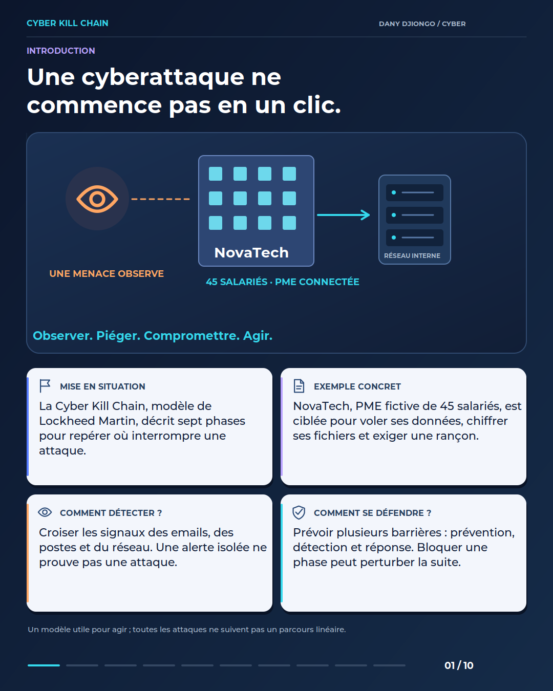
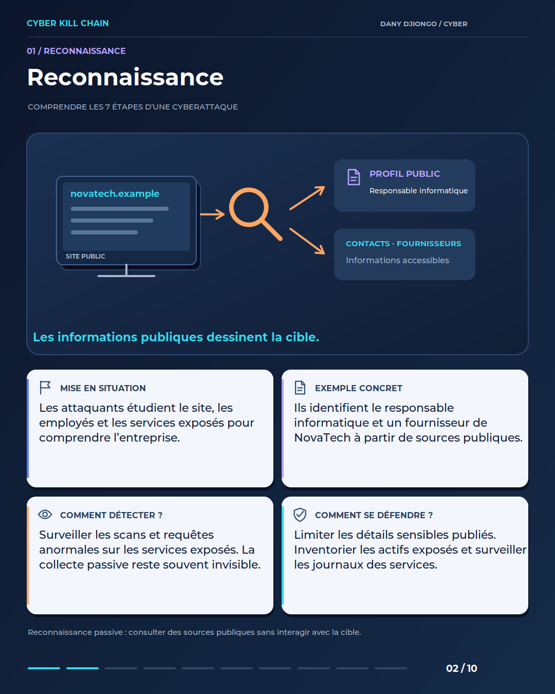
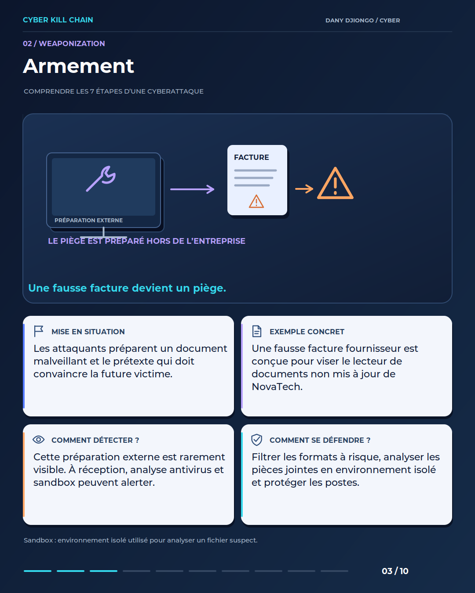
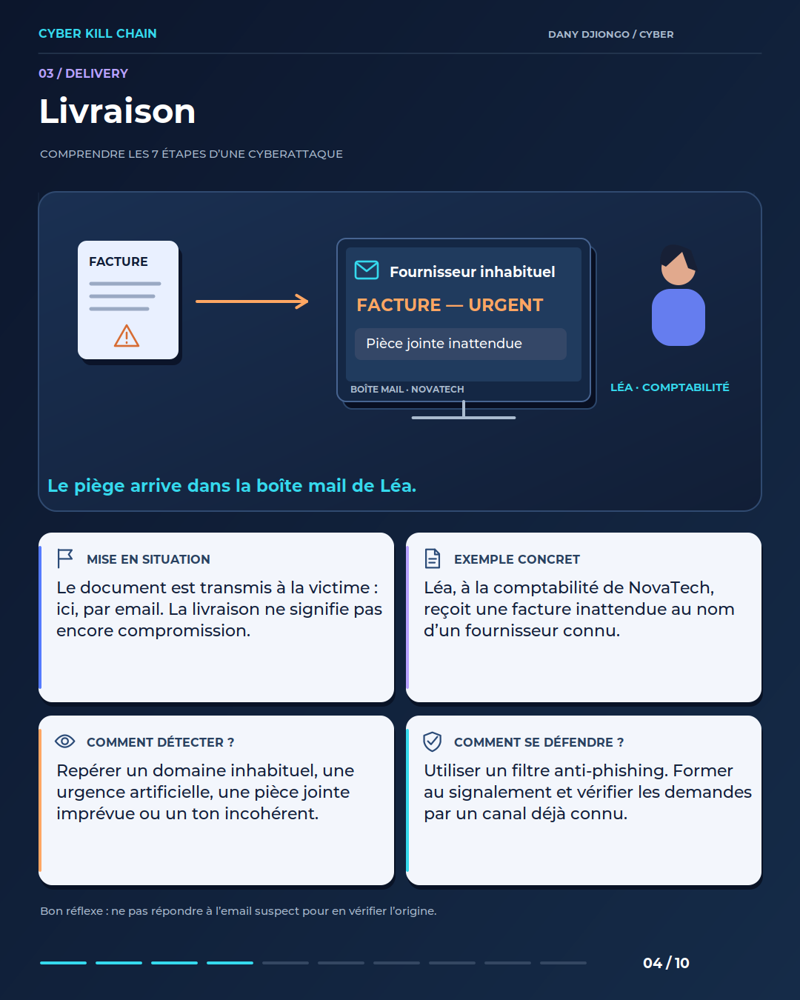
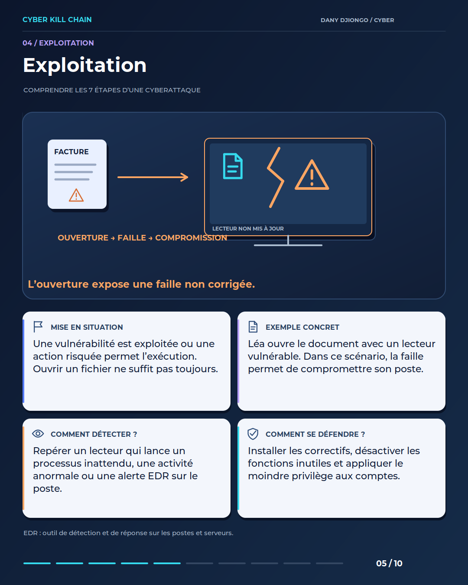
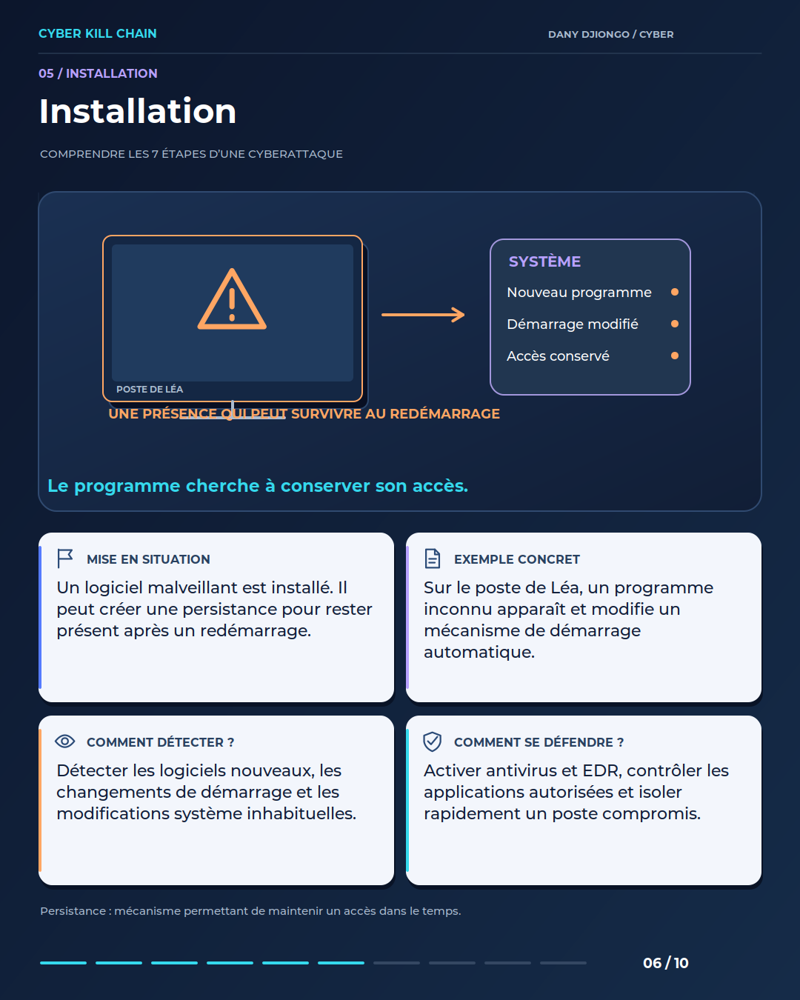
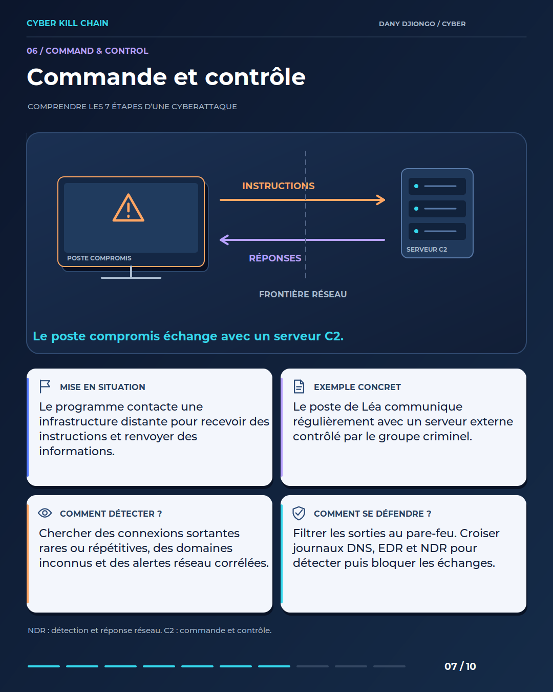
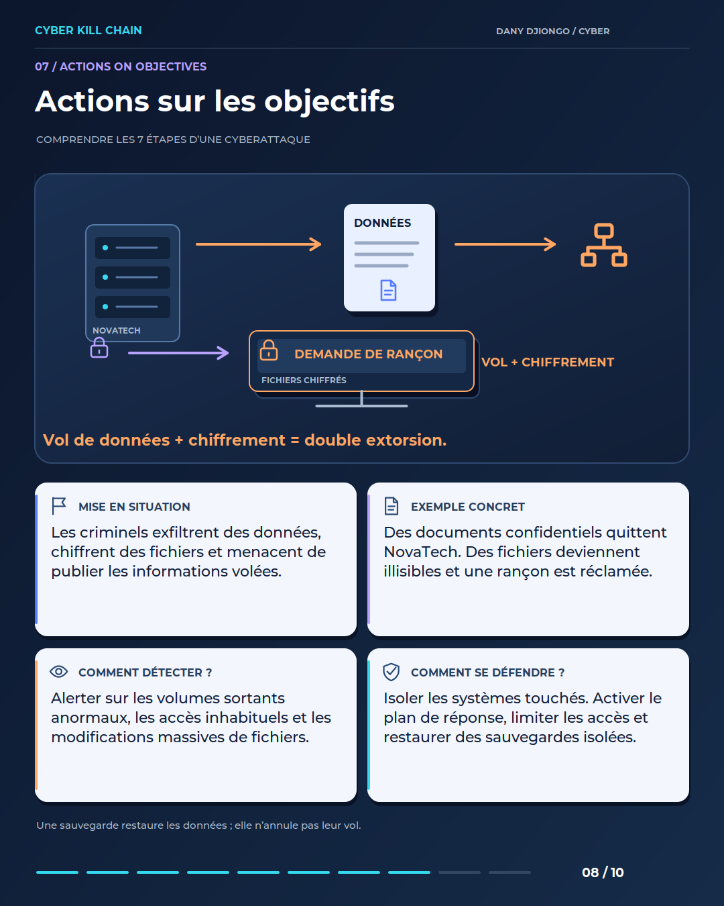
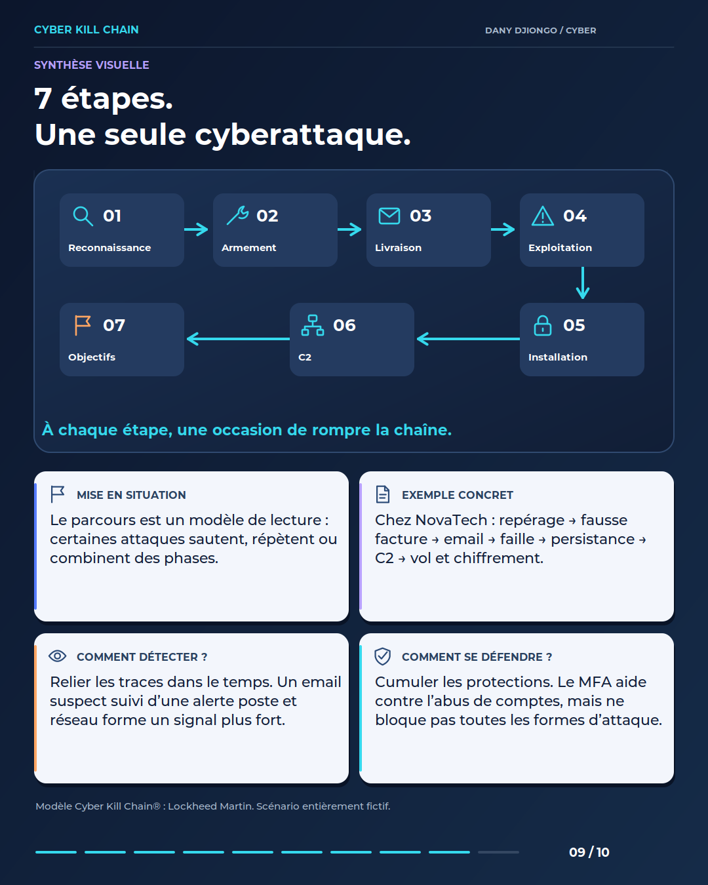
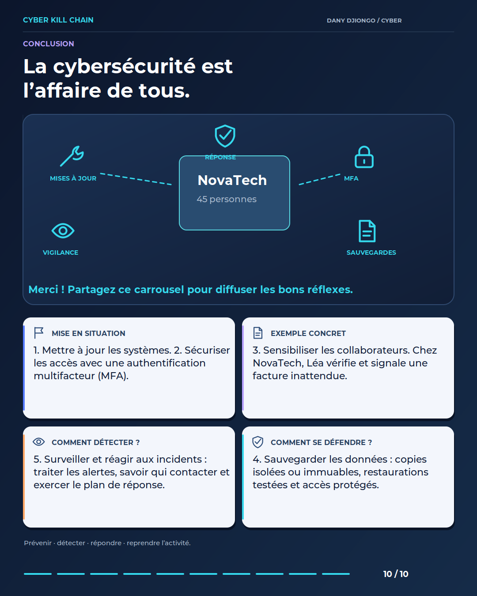

Ressource pédagogique · Scénario fictif NovaTech
Cyber Kill Chain : comprendre les 7 étapes d’une cyberattaque.
Dix fiches illustrées en infographies vectorielles. Chaque PNG mesure exactement 1080 × 1350 pixels et contient tous les textes. Les slides sont numérotées dans l’ordre de publication.
Pour publier un carrousel LinkedIn, importez le PDF comme document. Pour réutiliser une fiche, téléchargez son PNG ci-dessous.



02 — Reconnaissance



03 — Armement



04 — Livraison



05 — Exploitation



06 — Installation



07 — Commande et contrôle



08 — Actions sur les objectifs



09 — Synthèse visuelle


